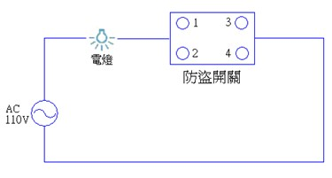
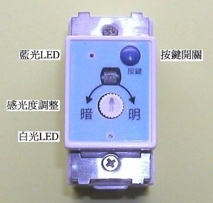

防盜偽裝自動點燈開關
產品特性
| 1. | 天黑自動點滅電燈，偽裝有人在家，嚇阻小偷入侵。 |
| 2. | 外觀與傳統開關相同，可直接替換。 |
| 3. | 與原配線相同，免重新拉線。 |
| 4. | 保留原開關手動切換功能，使用方便。 |
| 5. | 安裝簡單，可自行DIY。 |
產品簡介
| 1. | 您是否曾經有全家要外出好幾天，家裡沒人怕小偷光顧，裝保全貴又要收月租費，裝家用防盜貴又麻煩。本公司特別針對這個問題研發出此依產品，讓您有更便宜又簡單的防盜方法。 |
| 2. | 本產品使用簡單，按鍵平常做為手動開關燈用，當要長時間外出時，長壓3秒後為自動模式，天黑後便開始不定時隨機開關電燈(開關燈總時間約6-8小時，符合現代人的晚上作息時間)，偽裝有人在家的樣子。一般小偷要進入家裡行竊時，會先在外面觀察屋內有沒有人，確定無人才會進屋行竊，當看到屋內電燈有在開開關關，會以為屋內有人而放棄侵入。如果長時間外出而把燈一直開著不僅浪費能源，連白天都開著燈，反而告訴小偷長時間沒人在家，可以放心的大搬家。 |
| 3. | 外觀尺寸大小與傳統開關相同，可直接替換。與原來配線相同，不用再重新拉線。 |
| 4. | 由於本產品必需靠室外光線變化來判定白天或晚上，以啟動防盜功能，因此安裝的位置必須在跟室外光線變化明顯的地方。 |
| 5. | 如果於多個房間分別安裝上本產品，外出時同時啟動偽裝功能，天黑後各個房間不同步開關電燈，更能偽裝出有人在家之最佳情境。 |
產品照片

操作說明
| 1. | 感光度調整方式，盡可能於黃昏時調整，在以不遮住外界光源下，使用平口小起子，先逆時針調整到底，這時白光LED熄滅，再順時針調到白光LED亮，再慢慢逆時針調到白光LED熄滅，將手放在距離感光器10公分處，利用手的陰影遮住感光器，這時白光LED會亮，手陰影移開感光器白光LED會熄滅，這樣表示感光器己經調整完成。 |
| 2. | 按鍵按一下，自動變手動，藍光LED高亮，可手動控制燈亮或燈滅。 |
| 3. | 按鍵長壓3秒，變第一段自動模式，藍光LED閃爍，天黑後亂數點滅電燈 6 ～ 8 小時（隨機）後，電燈熄滅，至隔天再一次循環。 |
| 4. | 按鍵長壓 6 秒，變第二段自動模式，藍光LED微亮，天黑後自動點亮電燈 6 ～ 8 小時（隨機）後，電燈熄滅，至隔天再一次循環。 |
產品規格
| 體積大小 | 44×22×37 mm |
| 單蕊線 | ψ1.6或ψ2.0 mm切掉外皮包覆 18mm |
| 適用電壓 | AC 110V |
| 負載範圍 | 5W～200W傳統燈泡，10W～100W日光燈或省電燈泡 |
安裝方法

| 1. | 切斷電源，打開壁上開關蓋板，取出開關，拆除電線，銅線如有氧化生銹，請清潔乾淨。 |
| 2. | 將其中一條電線插入防盜開關1或2孔內，再將另一條電線插入防盜開關3或4孔內。 |
| 3. | 裝好防盜開關，蓋上蓋板，打開電源即可使用。 |
注意事項
| 1. | 安裝請配帶絕緣手套，以免發生觸電。 |
| 2. | 安裝前請留意本產品之電壓及負載規格。 |
| 3. | 避免陽光直接曝曬及潮溼。 |
| 4. | 少部份廠牌省電燈泡，因其內部電路設計不同，與本產品搭配會有閃爍現象，請於燈泡兩端並接上一個0.1uF耐壓400V的電容。 |
防盜燈圖示說明
